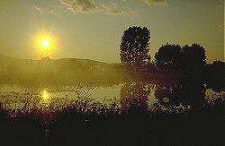

Cerknisko Jezero
Cerknica Lake
Useful Information
| Location: | South of Cercnica. (45° 46' N, 14° 24' E) |
| Open: | No restrictions. [2015] |
| Fee: | No restrictions. [2015] |
| Classification: |
 Polje
Karst Lake Polje
Karst Lake
|
| Light: | |
| Dimension: | Maximum Area 26 km². |
| Guided tours: | |
| Photography: | Allowed |
| Accessibility: | Yes |
| Bibliography: | |
| As far as we know this information was accurate when it was published (see years in brackets), but may have changed since then. Please check rates and details directly with the companies in question if you need more recent info. |
|
Description
|  |
| Image: the remains of the lake in summer. |
Cerknisko Jezero is a so called seasonal lake. As the water of the lake is connected directly with the water table, its level shows the level of the water table. The bed of the lake is connected to a large but mostly inaccessible subterranean labyrinth that spews out or swallows up the water.
The strange behaviour of the lake was already noticed by the ancient Romans who
had no explanation for it.
A description of it gained the 17th century Carniolan historian
Johann Weichard Frh. von Valvasor,
honorary membership in the Royal Geographical Society in London.
The maximum surface area of the lake is 26km², 10km long and 5km wide. In the summer it shrinks into a number of small puddles. Only one of them is permanent.
An island with a little village is located at the center of the lake.
 |
| Cerknisko Jezero Gallery |
- See also
 Search Google for "Cerkniško Jezero"
Search Google for "Cerkniško Jezero" Google Earth Placemark
Google Earth Placemark Cerkniško Jezero (Cerkniško Lake)
Cerkniško Jezero (Cerkniško Lake)- Animals of Cerkniško Polje,
has nothing to do with the geology, but is a very informative website about the animals of this unique habitat.
- Cerknisko jezero - lake,
cool panorama pictures of the lake with and without water.
(
 )
) - Slovenia names intermittent karst lake for third Ramsar site